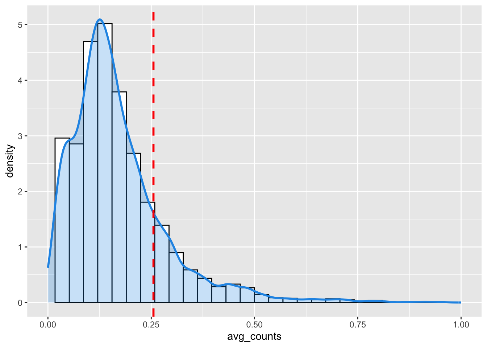

source_dir <- "./data/"
states_file_path <- file.path(source_dir,
"us49_states_geo_tigris.rds")
states_geo <- readRDS(states_file_path)[[1]]
counties_file_path <- file.path(source_dir,
"us49_counties_geo_tigris.rds")
counties_geo <- readRDS(counties_file_path)[[1]]
#plot(counties_geo[1])Extreme Heat/Cold Events Frequency Trend Analysis
Loading the base spatail data set including Counties and States boundaires
Loading the aggregate extreme events data set
dat_path <- file.path(source_dir,
"Counties_compiled_admin_geo_ehe_ece_sf_2008_2022.rds")
file_size <- file.info(dat_path)$size
dat <- readRDS(dat_path)[[1]]Overall frequency analysis
Complete yearly aggregated counts
Complete the yearly frequency counts by assign 0 to that year when there’s no extreme event records.
dat_table = dat %>% st_drop_geometry()
dat_table$total_area_sq_mile = dat_table$total_area/2590000
## Adding years with no event to the dataset
lookup_table <- dat_table %>%
dplyr::select(GEOID, NAME, STUSPS, STATE_NAME) %>%
distinct() %>%
filter(!is.na(NAME) & !is.na(STUSPS) & !is.na(STATE_NAME))
fill_na_with_lookup <- function(dat_table, lookup_table, column) {
na_rows <- is.na(dat_table[[column]])
lookup_values <- lookup_table[match(dat_table$GEOID[na_rows], lookup_table$GEOID), column]
dat_table[[column]][na_rows] <- lookup_values
return(dat_table)
}
year_range <- data.frame(year_numerical = 2008:2022)
unique_geoids <- unique(dat$GEOID)
year_geoid_combinations <- expand.grid(year_numerical = year_range$year_numerical, GEOID = unique_geoids)
event_count_all <- dat_table %>%
group_by(GEOID, NAME, STATE_NAME, year_numerical) %>%
summarize(event_count = n())`summarise()` has grouped output by 'GEOID', 'NAME', 'STATE_NAME'. You can
override using the `.groups` argument.event_count_all <- merge(year_geoid_combinations, event_count_all,
by = c("year_numerical", "GEOID"), all = TRUE)
event_count_all["event_count"] <- lapply(event_count_all["event_count"], function(x) ifelse(is.na(x), 0, x))
event_count_all <- fill_na_with_lookup(event_count_all, lookup_table, "NAME")
event_count_all <- fill_na_with_lookup(event_count_all, lookup_table, "STATE_NAME")
# Merge with average total area sq miles summary
avg_total_area <- dat_table %>%
group_by(GEOID, NAME, STATE_NAME) %>%
summarize(avg_total_area_sq_mile = mean(total_area_sq_mile))`summarise()` has grouped output by 'GEOID', 'NAME'. You can override using the
`.groups` argument.event_count_all = merge(event_count_all, avg_total_area,
by = c("GEOID", "NAME", "STATE_NAME"), all = TRUE)Average counts by county
# Yearly average counts per area
avg_dat_by_year = event_count_all %>%
mutate(avg_counts = event_count/avg_total_area_sq_mile) %>%
distinct()
avg_dat_by_year %>% group_by(STATE_NAME) %>%
ggplot(aes(x = avg_counts, y = STATE_NAME), data = .) +
stat_density_ridges(quantile_lines = TRUE, quantiles = 0.5)+ theme_minimal() + xlim(c(0,0.075))Picking joint bandwidth of 0.0016
# Overall average counts per area
avg_dat = dat_table %>%
group_by(GEOID, NAME, STATE_NAME) %>%
summarize(event_count = n(),
avg_total_area_sq_mile = mean(total_area_sq_mile))%>%
mutate(avg_counts = event_count/avg_total_area_sq_mile) %>%
distinct()`summarise()` has grouped output by 'GEOID', 'NAME'. You can override using the
`.groups` argument.ggplot(avg_dat, aes(x = avg_counts)) +
geom_histogram(aes(y = ..density..),
colour = 1, fill = "white") +
geom_density(lwd = 1, colour = 4,
fill = 4, alpha = 0.25) +
geom_vline(aes(xintercept=mean(avg_counts, na.rm=T)),
color="red", linetype="dashed", size=1) + xlim(c(0,1))`stat_bin()` using `bins = 30`. Pick better value with `binwidth`.
avg_dat = avg_dat %>%
mutate(avg_counts_cat = case_when(
avg_counts < 0.14 ~ "<0.14",
avg_counts >=0.14 & avg_counts <= 0.26 ~ "0.14-0.26",
avg_counts >0.26 & avg_counts <= 1 ~ "0.26-1",
TRUE ~ ">1"
)) %>%
mutate(avg_counts_cat = factor(avg_counts_cat,
levels = c('<0.14', "0.14-0.26", '0.26-1',
'>1')))
county_boundaries_catalog_all_counts <- merge(counties_geo,
avg_dat %>% st_drop_geometry(),
by.x="GEOID",
by.y="GEOID",
all.x = TRUE,
all.y = TRUE,
suffix = c("","_sp")) %>% st_as_sf()
palette <- rev(brewer.pal(4, "RdYlBu"))
# Frequency all map with grey for non-significant p-values
ggplot() +
geom_sf(data = county_boundaries_catalog_all_counts,
aes(fill = avg_counts_cat), color = NA,
lwd = .1) +
scale_fill_manual(values = palette) +
geom_sf(data = states_geo, fill = NA, color = "grey", size = 0.5) +
labs(fill = "Average Number of Extreme Events (2008-2022)") +
theme_void() +
theme(legend.position = "bottom")Poisson regression
For each county, a poisson regression model is used to analyze the percentage changes by year.
#poisson_all_area_freq <- event_count_all %>%
# group_by(GEOID, NAME, STATE_NAME) %>%
# do(model = glm(event_count ~ year_numerical +
# avg_total_area_sq_mile, family = poisson(), data = .))
poisson_all_area_freq <- event_count_all %>%
group_by(GEOID, NAME, STATE_NAME) %>%
do(model = MASS::glm.nb(event_count ~ year_numerical +
offset(log(avg_total_area_sq_mile)), data = .))
# Calculating slopes, percentage changes, and evaluation metrics including goodness of fit and p-values
slopes_all_area_adj <- poisson_all_area_freq %>%
rowwise() %>%
mutate(
slope = coef(model)[["year_numerical"]],
percentage_change = (exp(slope) - 1) * 100,
p_value = summary(model)$coefficients["year_numerical","Pr(>|z|)"],
residual_deviance = deviance(model),
df_residual = df.residual(model),
deviance_ratio = residual_deviance / df_residual, # Ratio of residual deviance to degrees of freedom
dispersion = sum(residuals(model, type = "pearson")^2) / df_residual, # Dispersion parameter
aic = AIC(model),bic = BIC(model)
) %>%
ungroup() %>%
dplyr::select(GEOID, NAME, STATE_NAME, slope, percentage_change,p_value,
residual_deviance, df_residual,
deviance_ratio, dispersion, aic,bic)
slopes_all_area_adj = slopes_all_area_adj %>%
mutate(percentage_change_cat = case_when(
percentage_change < -10 ~ "<-10%",
percentage_change >=-10 & percentage_change<= -5 ~ "-10 - -5%",
percentage_change >-5 & percentage_change<= -1 ~ "-5 - -1%",
percentage_change >-1 & percentage_change<= 0 ~ "-1-0%",
percentage_change >0 & percentage_change<= 1 ~ "0-1%",
percentage_change >1 & percentage_change <= 5 ~ "1-5%",
percentage_change >5 & percentage_change <= 10 ~ "5-10%",
TRUE ~ ">10%"
)) %>%
mutate(percentage_change_cat = factor(percentage_change_cat,
levels = c("<-10%","-10 - -5%","-5 - -1%",
"-1-0%","0-1%",
"1-5%", "5-10%", ">10%")))
#alabama = slopes_all_area_freq %>% filter(STATE_NAME == "Alabama")
#anova_result <- aov(slope ~ NAME, data = alabama)
#summary(anova_result)
#summary(anova_result)[[1]][["Pr(>F)"]][1]
#anova_results <- list()
#for (state_name in unique(slopes_all_area_freq$STATE_NAME)) {
# state_data <- slopes_all_area_freq[slopes_all_area_freq$STATE_NAME == state_name, ]
# if (length(unique(state_data$NAME)) > 1) {
# anova_results[[state_name]] <- summary(aov(slope ~ NAME, data = state_data))
# }
#}Model Selection
NB_regression = event_count_all %>%
group_by(GEOID, NAME, STATE_NAME) %>%
do(model = MASS::glm.nb(event_count ~ year_numerical +
offset(log(avg_total_area_sq_mile)), data = .))
slopes_nb <- NB_regression %>%
rowwise() %>%
mutate(
slope = coef(model)[["year_numerical"]],
percentage_change = (exp(slope) - 1) * 100,
p_value = summary(model)$coefficients["year_numerical","Pr(>|z|)"],
residual_deviance = deviance(model),
df_residual = df.residual(model),
deviance_ratio = residual_deviance / df_residual,
dispersion = sum(residuals(model, type = "pearson")^2) / df_residual,
aic = AIC(model),
bic = BIC(model)
) %>%
ungroup() %>%
dplyr::select(GEOID, NAME, STATE_NAME, slope, percentage_change, p_value,
residual_deviance, df_residual,
deviance_ratio, dispersion, aic, bic)
model_comparison_table1 <- event_count_all %>%
group_by(GEOID, NAME, STATE_NAME) %>%
summarize(
NB_Model_AIC = AIC(NB_regression$model[[1]]),
Poisson_Model_AIC = AIC(poisson_all_area_freq$model[[1]]),
Preferred_Model_AIC = ifelse(NB_Model_AIC < Poisson_Model_AIC, "Negative Binomial", "Poisson"),
NB_Model_BIC = BIC(NB_regression$model[[1]]),
Poisson_Model_BIC = BIC(poisson_all_area_freq$model[[1]]),
Preferred_Model_BIC = ifelse(NB_Model_BIC < Poisson_Model_BIC, "Negative Binomial", "Poisson"),
NB_Model_RD = NB_regression$model[[1]]$deviance,
Poisson_Model_RD = poisson_all_area_freq$model[[1]]$deviance,
Preferred_Model_RD = ifelse(NB_Model_RD < Poisson_Model_RD, "Negative Binomial", "Poisson")
)`summarise()` has grouped output by 'GEOID', 'NAME'. You can override using the
`.groups` argument.#hist(slopes_all_area_freq$p_value)
#hist(slopes_all_area_freq$percentage_change)
#hist(slopes_all_area_freq$aic)
#hist(slopes_all_area_freq$pseudo_r_squared)Map
# Merge with geometry data
slopes_all_cut = slopes_all_area_adj %>% filter(abs(percentage_change) < 45)
county_boundaries_catalog_all <- merge(counties_geo,
slopes_all_cut %>% st_drop_geometry(),
by.x="GEOID",
by.y="GEOID",
all.x = TRUE,
all.y = TRUE,
suffix = c("","_sp")) %>% st_as_sf()
# Frequency all map with grey for non-significant p-values
#ggplot() +
# geom_sf(data = county_boundaries_catalog_all,
# aes(fill = percentage_change), color = NA,
# lwd = .1) +
# scale_fill_distiller(palette = "RdBu", limits = c(-17,17)) +
# geom_sf(data = states_geo, fill = NA, color = "grey", size = 0.5) +
# labs(fill = "Frequency (Area adjusted)") +
# theme_void() +
# theme(legend.position = "bottom")
#heat_colors <- c("<1%" = "lightblue", "1-5%" = "yellow", "5-10%" = "orange", ">10%" = "red")
palette <- rev(brewer.pal(8, "RdBu"))
ggplot() +
geom_sf(data = county_boundaries_catalog_all,
aes(fill = percentage_change_cat), color = NA,
lwd = .1) +
scale_fill_manual(values = palette, na.translate = F) +
geom_sf(data = states_geo, fill = NA, color = "grey", size = 0.5) +
labs(fill = "Percentage Change in Frequency (Area adjusted)") +
theme_void() +
theme(legend.position = "bottom")Prediction
#prediction_data <- expand.grid(
# year_numerical = c(2025, 2030),
# avg_impacted_area_hectare = event_count_all$avg_impacted_area_hectare
#)
#predictions <- poisson_all_area_freq %>%
# mutate(
# predictions = list(
# apply(prediction_data, 1, function(new_data) {
# new_data <- as.data.frame(t(new_data))
# pred <- predict(model, newdata = new_data, type = "response", se.fit = TRUE)
# data.frame(
# prediction = pred$fit,
# lower_95 = pred$fit - 1.96 * pred$se.fit,
# upper_95 = pred$fit + 1.96 * pred$se.fit
# )
# })
# )
# ) %>%
# select(GEOID, NAME, STATE_NAME, predictions)Extreme Heat Events
event_count_ehe <- dat_table %>%
filter(event_type == "Extreme Heat Event") %>%
group_by(GEOID, NAME, STATE_NAME, year_numerical) %>%
summarize(event_count = n())
event_count_ehe <- merge(year_geoid_combinations, event_count_ehe, by = c("year_numerical", "GEOID"), all = TRUE)
event_count_ehe["event_count"] <- lapply(event_count_ehe["event_count"], function(x) ifelse(is.na(x), 0, x))
event_count_ehe <- fill_na_with_lookup(event_count_ehe, lookup_table, "NAME")
event_count_ehe <- fill_na_with_lookup(event_count_ehe, lookup_table, "STATE_NAME")
# Merge with average total area sq miles summary
avg_total_area_ehe <- dat_table %>%
group_by(GEOID, NAME, STATE_NAME) %>%
summarize(avg_total_area_sq_mile = mean(total_area_sq_mile))
event_count_ehe = merge(event_count_ehe, avg_total_area_ehe,
by = c("GEOID", "NAME", "STATE_NAME"), all = TRUE)
# Poisson Regression
poisson_ehe_area_adj <- event_count_ehe %>%
group_by(GEOID, NAME, STATE_NAME) %>%
do(model = MASS::glm.nb(event_count ~ year_numerical +
offset(log(avg_total_area_sq_mile)), data = .))
slopes_ehe_poi_area_adj <- poisson_ehe_area_adj %>%
rowwise() %>%
mutate(
slope = coef(model)[["year_numerical"]],
percentage_change = (exp(slope) - 1) * 100,
p_value = summary(model)$coefficients["year_numerical","Pr(>|z|)"],
residual_deviance = deviance(model),
df_residual = df.residual(model),
deviance_ratio = residual_deviance / df_residual, # Ratio of residual deviance to degrees of freedom
dispersion = sum(residuals(model, type = "pearson")^2) / df_residual, # Dispersion parameter
aic = AIC(model), bic = BIC(model)
) %>%
ungroup() %>%
dplyr::select(GEOID, NAME, STATE_NAME, slope, percentage_change,p_value,
residual_deviance, df_residual,
deviance_ratio, dispersion, aic,bic)
slopes_ehe_poi_area_adj = slopes_ehe_poi_area_adj %>%
mutate(percentage_change_cat = case_when(
percentage_change < -10 ~ "<-10%",
percentage_change >=-10 & percentage_change<= -5 ~ "-10 - -5%",
percentage_change >-5 & percentage_change<= -1 ~ "-5 - -1%",
percentage_change >-1 & percentage_change<= 0 ~ "-1-0%",
percentage_change >0 & percentage_change<= 1 ~ "0-1%",
percentage_change >1 & percentage_change <= 5 ~ "1-5%",
percentage_change >5 & percentage_change <= 10 ~ "5-10%",
TRUE ~ ">10%"
)) %>%
mutate(percentage_change_cat = factor(percentage_change_cat,
levels = c("<-10%","-10 - -5%","-5 - -1%",
"-1-0%","0-1%",
"1-5%", "5-10%", ">10%")))hist(slopes_ehe_poi_area_adj$p_value)
hist(slopes_ehe_poi_area_adj$percentage_change)hist(slopes_ehe_poi_area_adj$aic)Average Counts by County
avg_counts_county_ehe = event_count_ehe %>%
group_by(GEOID, NAME, STATE_NAME) %>%
summarise(county_avg_count = mean(event_count))`summarise()` has grouped output by 'GEOID', 'NAME'. You can override using the
`.groups` argument.county_boundaries_catalog_ehe_counts <- merge(counties_geo,
avg_counts_county_ehe %>% st_drop_geometry(),
by.x="GEOID",
by.y="GEOID",
all.x = TRUE,
all.y = TRUE,
suffix = c("","_sp")) %>% st_as_sf()
# Frequency all map with grey for non-significant p-values
ggplot() +
geom_sf(data = county_boundaries_catalog_ehe_counts,
aes(fill = county_avg_count), color = NA,
lwd = .1) +
scale_fill_viridis_c(option = "B", direction = -1) +
geom_sf(data = states_geo, fill = NA, color = "grey", size = 0.5) +
labs(fill = "Average Number of Extreme Heat Events (2008-2022)") +
theme_void() +
theme(legend.position = "bottom")Map
slopes_ehe_cut = slopes_ehe_poi_area_adj %>% filter(abs(percentage_change) < 45)
# Merge with geometry data
county_boundaris_ehe_catalog <- merge(counties_geo,
slopes_ehe_cut %>% st_drop_geometry(),
by.x="GEOID",
by.y="GEOID",
all.x = TRUE,
all.y = TRUE,
suffix = c("","_sp")) %>% st_as_sf()
# Frequency EHE map
#ggplot() +
# geom_sf(data = county_boundaris_ehe_catalog,
# aes(fill = percentage_change), color = NA,
# lwd = .1) +
# scale_fill_distiller(palette = "RdBu", limit = c(-42.5, 42.5)) +
# geom_sf(data = states_geo, fill = NA, color = "grey", size = 0.1) +
# labs(fill = "Frequency EHE (Adjusted by Area)") +
# theme_void() +
# theme(legend.position = "bottom")
#heat_colors <- c("<1%" = "lightblue", "1-5%" = "yellow", "5-10%" = "orange", ">10%" = "red")
palette <- rev(brewer.pal(8, "RdBu"))
ggplot() +
geom_sf(data = county_boundaris_ehe_catalog,
aes(fill = percentage_change_cat), color = NA,
lwd = .1) +
scale_fill_manual(values = palette, na.translate = F) +
geom_sf(data = states_geo, fill = NA, color = "grey", size = 0.5) +
labs(fill = "Percentage Change in Frequency EHE (Area adjusted)") +
theme_void() +
theme(legend.position = "bottom")
Extreme Cold Events
event_count_ece <- dat_table %>%
filter(event_type == "Extreme Cold Event") %>%
group_by(GEOID, NAME, STATE_NAME, year_numerical) %>%
summarize(event_count = n())
event_count_ece <- merge(year_geoid_combinations, event_count_ece, by = c("year_numerical", "GEOID"), all = TRUE)
event_count_ece["event_count"] <- lapply(event_count_ece["event_count"], function(x) ifelse(is.na(x), 0, x))
event_count_ece <- fill_na_with_lookup(event_count_ece, lookup_table, "NAME")
event_count_ece <- fill_na_with_lookup(event_count_ece, lookup_table, "STATE_NAME")
# Merge with average total area sq miles summary
avg_total_area_ece <- dat_table %>%
group_by(GEOID, NAME, STATE_NAME) %>%
summarize(avg_total_area_sq_mile = mean(total_area_sq_mile))
event_count_ece = merge(event_count_ece, avg_total_area_ece,
by = c("GEOID", "NAME", "STATE_NAME"), all = TRUE)
# NB Regression
slopes_ece_poi_area_adj <- event_count_ece %>%
group_by(GEOID, NAME, STATE_NAME) %>%
do({
# Fit the Negative Binomial model
tryCatch({
model = MASS::glm.nb(event_count ~ year_numerical +
offset(log(avg_total_area_sq_mile)), data = .)
coef_model = coef(model)["year_numerical"]
percentage_change = (exp(coef_model) - 1) * 100
p_values = summary(model)$coefficients["year_numerical", "Pr(>|z|)"]
aic_value = AIC(model)
bic_value = BIC(model)
data.frame(coef = coef_model, percentage_change, p_value = p_values,
AIC = aic_value, BIC = bic_value)
}, error = function(e) {
# Return NA in case of an error
data.frame(coef = NA, percentage_change = NA, p_value = NA,
AIC = NA, BIC = NA)
})
})
#poisson_ece_area_adj <- event_count_ece %>%
# group_by(GEOID, NAME, STATE_NAME) %>%
# do(model = glm(event_count ~ year_numerical +
# offset(log(avg_total_area_sq_mile)), family = quasipoisson, data = .))
slopes_ece_poi_area_adj = slopes_ece_poi_area_adj %>%
mutate(percentage_change_cat = case_when(
percentage_change < -10 ~ "<-10%",
percentage_change >=-10 & percentage_change<= -5 ~ "-10 - -5%",
percentage_change >-5 & percentage_change<= -1 ~ "-5 - -1%",
percentage_change >-1 & percentage_change<= 0 ~ "-1-0%",
percentage_change >0 & percentage_change<= 1 ~ "0-1%",
percentage_change >1 & percentage_change <= 5 ~ "1-5%",
percentage_change >5 & percentage_change <= 10 ~ "5-10%",
percentage_change > 10 ~ ">10%"
)) %>%
mutate(percentage_change_cat = factor(percentage_change_cat,
levels = c("<-10%","-10 - -5%","-5 - -1%",
"-1-0%","0-1%",
"1-5%", "5-10%", ">10%")))#hist(slopes_ece_poi$p_value)
#hist(slopes_ece_poi$percentage_change)
#hist(slopes_ece_poi$aic)Average counts by county
avg_counts_county_ece = event_count_ece %>%
group_by(GEOID, NAME, STATE_NAME) %>%
summarise(county_avg_count = mean(event_count))`summarise()` has grouped output by 'GEOID', 'NAME'. You can override using the
`.groups` argument.county_boundaries_catalog_ece_counts <- merge(counties_geo,
avg_counts_county_ece %>% st_drop_geometry(),
by.x="GEOID",
by.y="GEOID",
all.x = TRUE,
all.y = TRUE,
suffix = c("","_sp")) %>% st_as_sf()
# Frequency all map with grey for non-significant p-values
ggplot() +
geom_sf(data = county_boundaries_catalog_ece_counts,
aes(fill = county_avg_count), color = NA,
lwd = .1) +
scale_fill_viridis_c(option = "D", direction = -1) +
geom_sf(data = states_geo, fill = NA, color = "grey", size = 0.5) +
labs(fill = "Average Number of Extreme Cold Events (2008-2022)") +
theme_void() +
theme(legend.position = "bottom")Map
slopes_ece_cut = slopes_ece_poi_area_adj %>% filter(abs(percentage_change) < 45)
# Merge with geometry data
county_boundaris_ece_catalog <- merge(counties_geo,
slopes_ece_cut %>% st_drop_geometry(),
by.x="GEOID",
by.y="GEOID",
all.x = TRUE,
all.y = TRUE,
suffix = c("","_sp")) %>% st_as_sf()
# Frequency ECE map
#ggplot() +
# geom_sf(data = county_boundaris_ece_catalog,
# aes(fill = percentage_change), color = NA,
# lwd = .1) +
# scale_fill_distiller(palette = "RdBu", limit = c(-27, 27)) +
# geom_sf(data = states_geo, fill = NA, color = "grey", size = 0.5) +
# labs(fill = "Frequency ECE (Adjusted by area)") +
# theme_void() +
# theme(legend.position = "bottom")
#heat_colors <- c("<1%" = "lightblue", "1-5%" = "yellow", "5-10%" = "orange", ">10%" = "red")
palette <- rev(brewer.pal(8, "RdBu"))
ggplot() +
geom_sf(data = county_boundaris_ece_catalog,
aes(fill = percentage_change_cat), color = NA,
lwd = .1) +
scale_fill_manual(values = palette, na.translate = F) +
geom_sf(data = states_geo, fill = NA, color = "grey", size = 0.5) +
labs(fill = "Percentage Change in Frequency ECE (Area adjusted)") +
theme_void() +
theme(legend.position = "bottom")State Level Analysis
state_ehe_dat = event_count_ehe %>%
dplyr::select(year_numerical, STATE_NAME, event_count)
poi_state_ehe <- state_ehe_dat %>%
group_by(STATE_NAME) %>%
do(model = glm(event_count ~ year_numerical, family = poisson(), data = .))
slopes_state_ehe <- poi_state_ehe %>%
rowwise() %>%
mutate(
slope = coef(model)[["year_numerical"]],
percentage_change = (exp(slope) - 1) * 100,
p_value = summary(model)$coefficients["year_numerical","Pr(>|z|)"],
residual_deviance = deviance(model),
df_residual = df.residual(model),
deviance_ratio = residual_deviance / df_residual, # Ratio of residual deviance to degrees of freedom
dispersion = sum(residuals(model, type = "pearson")^2) / df_residual, # Dispersion parameter
aic = AIC(model)
) %>%
ungroup() %>%
dplyr::select(STATE_NAME, slope, percentage_change,p_value,
residual_deviance, df_residual,
deviance_ratio, dispersion, aic)Map
# Merge with geometry data
state_boundaris_ehe_catalog <- merge(states_geo,
slopes_state_ehe %>% st_drop_geometry(),
by.x="STATE_NAME",
by.y="STATE_NAME",
all.x = TRUE,
all.y = TRUE,
suffix = c("","_sp")) %>% st_as_sf()
# Area ECE map
ggplot() +
geom_sf(data = state_boundaris_ehe_catalog,
aes(fill = percentage_change), color = NA,
lwd = .1) +
scale_fill_distiller(palette = "RdBu",
limits = c(-10.7, 10.7)
) +
geom_sf(data = states_geo, fill = NA, color = "grey", size = 0.5) +
labs(fill = "State Frequency EHE") +
theme_void() +
theme(legend.position = "bottom")